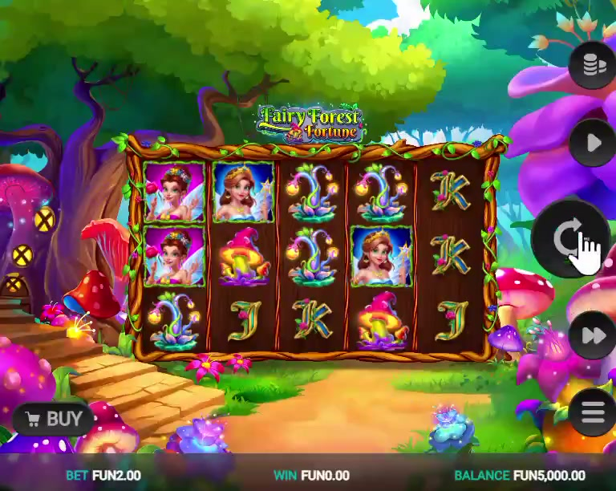
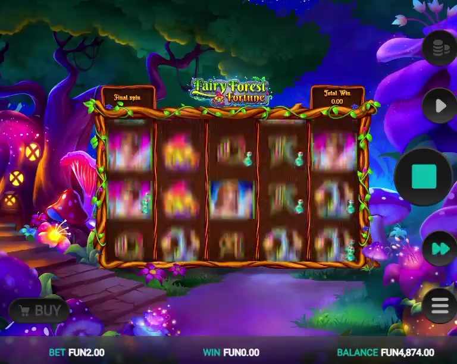
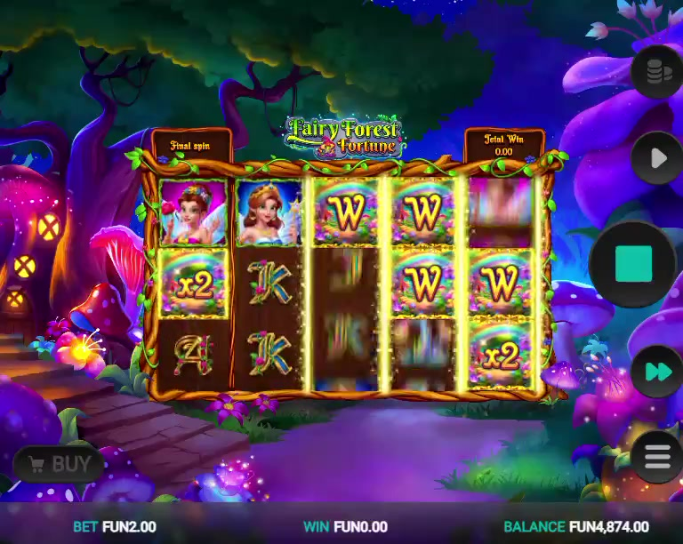

← Client projects / Fairy Forest Fortune
iGaming slot · Relax Gaming · 2025
Fairy Forest Fortune
Fairy queens and woodland folklore.
Relax GamingReskinWild RespinFree Spin Bonus
Concept
A whimsical fairycore reskin set in an enchanted forest, where fairy queens and woodland folklore replace the base title's original symbol set. The signature Wild Respin feature locks in wild symbols and retriggers the reel spin, alongside a Free Spin Bonus, all under a shimmering forest aesthetic that turns a familiar payline structure into a fresh, storybook read for a global iGaming audience.
My role
I was the design lead on the Fairy Forest Fortune reskin for Relax Gaming, directing symbols, visual theme, animation and sound from concept through final delivery.
- Creative direction. Guided the symbol set and visual theme so the fairy-forest identity stayed consistent across every asset.
- Animation and audio. Directed the animation flow and sound design, so the reskin felt like one finished product.
- Documentation. Documented every stage from concept to final handoff, so the work could be reviewed and delivered cleanly.
- Fidelity to the original. Changed what the player sees and hears while leaving the original title's gameplay untouched.
- Delivery. Handed the finished reskin over to Relax Gaming as designer and creative lead.
PublisherRelax Gaming
Year2025
TypeiGaming slot
PhaseReskin
FeaturesWild Respin, Free Spin Bonus
All design and development rights reserved to Relax Gaming.
Gameplay
Gameplay captures
Screens from the gameplay recording.


